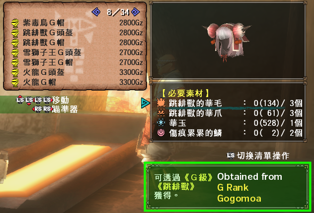
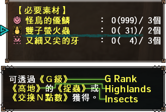
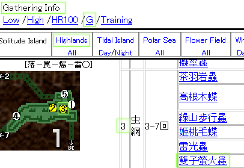
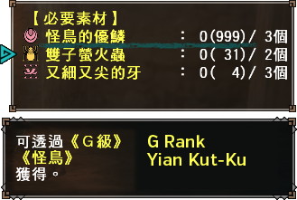
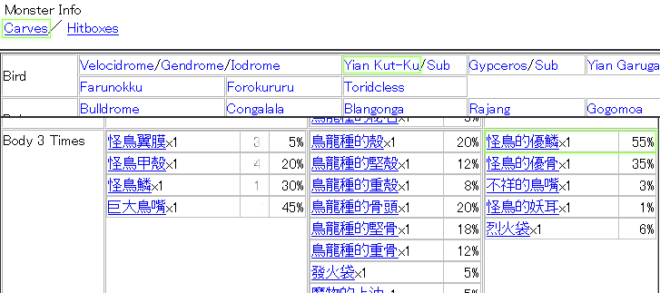
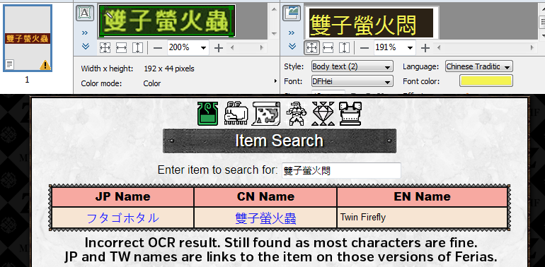
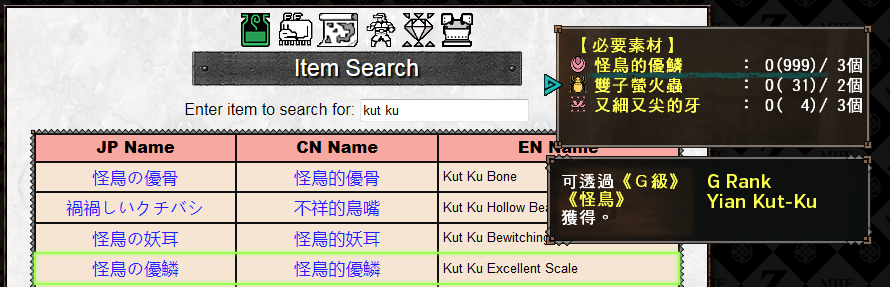

While you are trying to craft anything and have the required materials list visible you can press in the Left Stick or press 1 on keyboard to highlight these, this will display basic information on the source of the Material. Naturally this will display monster names and location names in chinese and as such should be referenced against those.
The format of the message is fairly standardised for example:
可透過《HR1~99》的 《精靈鹿》獲得。
Obtained from 《HR1~99》 level 《Kelbi》。
For any carve marked as HC you will need to toggle on HC (see Style Rank or Starting G Rank sections). The HR and SR ranges are currently still those of G9, the modern ranges are:
| HR1 | SR or HR1 |
| HR2 | SR or HR2-31 |
| HR3 | SR or HR32-50 |
| HR4 | SR or HR51-99 |
| HR5 | SR or HR100 |
| HR6 | SR300 |
Things to look for are:
| Gathering Types | ||
| 《採集》 Gathering | 《採掘》 Mining | 《捉蟲》 Bug Catching |
| 《花園》 Gook Farm | 《交換N點數》 N Point Store | 《棰限征伐戰》 Conquest Reward |
| 請於《官網》的《最新消息》《活動情報》做確認。 Time limited and or event items. | ||
| Location Names | ||
| 《密林》 Jungle | 《沙漠》 Desert | 《沼澤》 Swamp |
| 《雪山》 Snowy Mountains | 《火山》 Volcano | 《塔》 Tower |
| 《森丘》 Forest and Hills | 《樹海》 Great Forest | 《峡谷》 Canyon |
| 《高地》 Highlands | 《潮島》 Tidal Island | 《花田》 Flower Field |
| 《極海》 Polar Sea | 《白湖》 White Lake | 《彩之漉》 Painted Falls |
| Monster Names | ||
| Use the other available lists. | ||
There are two versions of Ferias, a Japanese version which is the original and a less updated Taiwanese Clone. You should get the Greasemonkey Translation Script (detailed more in tools section) which translates the majority of menus and important information to english and then simply go to the sections as you would on an english site.




This site has a Database of most things in the game which allows you to type in any English, Japanese or Chinese name and it'll put out links (if available) to all relevant sites and show all three versions of their names. OCR paired with the database should find most things even if characters are botched as long as it's mostly correct. If there are clearly mistakes, you should trim it to use only characters you believe are correct as partial matches are fine.

You can also simply type in names of monster names you recognise and it'll put out any materials from those monsters using their names within the item names which allows you to click through to ferias for Rank Requirements, Drop Percentages, etc. immediately.

There are two ways to increase the size of your box. Buying certain items from the store and simply increasing your Ranks.
| Box Capacity Increase | |
| Purchase Items: 收納高手·技之書 收納高手·力之書 重建高手·匠之技 (HR2) 重建高手·錢之技 (HR3) |
+1 Page Each +4 Pages Total |
| Increase Hunter Rank: 1 through 7 |
Variable Pages Each +20 Pages Total |
| Reach G Rank: 1 / 500 |
+3 Page Each +6 Pages Total |
| Obtain Caravan Rank Points: 689648 / 1153328 / 1799792 / 2492432 3185072 / 4180752 / 5176432 / 6257456 8028848 / 9926768 |
+1 Page Each +10 Pages Total |
| Maximum Item Box Capacity 41 Pages | |
Equipment box will increase alongside the item box to a maximum of 20 pages. The equipment box does not get additional pages for Caravan Rank nor any for G Rank.
Item Presets are pretty simple, simply set up your character's active inventory to be exactly what you want to register as a preset, access any box and choose the Item Presets (道具組合) option followed by Register Preset (登錄道具組合) and then choose a slot to register to and optionally name it.
Slots 1 through 4 correspond to pressing L1/L2/R1/R2 or F/Ctrl/C/Shift while interacting with a box. This means after a quest if you simply run up to a box, interact, and press L1 or F you will instantly equip your prset from Slot 1.
If you are subscribed you will have an extra 20 preset slots which you can access by going into Item Presets (道具組合) option followed by Equip Preset (呼叫道具組合) slots 5 through 24 do not have keyboard or controller shortcuts and must be manually equipped.
It is highly recommended to manually sort your equipment box.
Keeping your inventory sorted properly will help immensely if you do not have any knowledge of Chinese as it will guarantee your armour sets are sorted to be equipped easily. It's especially important when you get to G Rank as at that point you start to convert armour pieces into gems. If you are auto-sorting it may become incredibly difficult to keep track of what equipment you are actively wanting to convert into gems and what you want to keep.
Sorting is obviously all down to personal preference and as such this site will not tell you how to do it, the following are some images of how I personally sort things.
Armours to Keep on Pages 11-18 and armours to scrap for gems on page 19-20

Weapons on Pages 1-11 with two types per page.

Common items that are vital for basic playing are found below, please do not take this as anything close to a complete list. Refer to the Google Document for comprehensive lists including materials and combinations.
| Common Item Quick Reference | |||
| 藥草 | Herb | 增強劑 | Catalyst |
| 蜂蜜 | Honey | 元氣飲料 | Energy Drink |
| 回復藥 | Potion | 生命之粉 | Lifecrystals |
| 回復藥‧大 | Mega-Potion | 生命粉塵 | Lifepowder |
| 營養劑 | Nutrients | 生肉 | Raw Meat |
| 營養劑‧大 | Mega-Nutrients | 半熟肉 | Rare Steak |
| 解毒藥 | Antidote | 全熟肉 | Well-Done Steak |
| 強走藥 | Power Juice | 全熟肉Ｇ | Gourmet Steak |
| 強走藥‧大 | Mega-Juice | 素材球 | Bomb Material |
| 鬼人藥 | Demondrug | 染色球 | Paintbal |
| 鬼人藥‧大 | Mega Demondrug | 標記球 | Marking Ball |
| 怪力藥丸 | Power Pill | 閃光球 | Flash Bomb |
| 硬化藥 | Armorskin | 音爆彈 | Sonic Bomb |
| 硬化藥‧大 | Mega Armorskin | 網子 | Net |
| 忍耐藥丸 | Armor Pill | 陷阱工具 | Trap Tool |
| 冷飲 | Cool Drink | 地洞 | Pitfall Trap |
| 熱飲 | Hot Drink | 麻痺陷阱 | Shock Trap |
| 冷熱飲 | Hot + Cold Drink | 小爆彈桶 | Small Barrel Bomb |
| 千里眼之藥 | Psychoserum | 大爆彈桶 | Large Barrel Bomb |
| 萬里眼之藥 | Psychoserum | 大爆彈桶G | Large Barrel Bomb+ |
| 秘藥 | Max Potion | 急奔精華 | Power Extract |
| 古老的秘藥 | Ancient Potion | 電龍精華 | Pale Extract |
| 風茄 | Dragon Toadstool | 雷光蟲 | Thunderbug |
| 忍耐種子 | Armor Seed | 染色果實 | Paintberry |
| 怪力種子 | Power Seed | 捕獲用麻醉藥 | Tranquilizer |
| 光蟲 | Flashbug | 捕獲用麻醉球 | Tranq Bomb |
| 黏著草 | Sap Plant | 精靈鹿角 | Kelbi Horn |
| 爆雷針 | Lightning Rod | 活力劑 | Immunizer |
| Icon | CN Name | EN Name | Mining | Quest Rewards | GCP / NP / Festi Points |
| 鎧玉 | Armour Sphere | HR1-2 | HR1-2 Quests | 30 / 6 / 20 |
| 上鎧玉 | Armour Sphere+ | 40 / 8 / 30 | ||
| 尖鎧玉 | Adv Armour Sphere | HR3-4 | HR3-4 Quests | 50 / 10 / 35 |
| 堅鎧玉 | Hard Armour Sphere | 60 / 12 / 40 | ||
| 重鎧玉 | Heavy Armour Sphere | HR5 / G Rank | HR5 Standard Quests | 70 / 14 / 50 |
| 真鎧玉 | True Armour Sphere | 80 / 16 / 55 | ||
| 剛鎧玉 | Strong Armour Sphere | Rewards Only | HR5 Gou or Exotics, HR6 Supremacy Quests | 90 / 18 / 65 |
| 天鎧玉 | Divine Armour Sphere | 100 / 20 / 70 |
Frontier has two combination modes, 2 item and 3 item combinations. For example this means you can make an Ancient Potion by either combining:
Immunizer + Kelbi Horn or Catalyst + Dragon Toadstool + Kelbi Horn
This does not however mean that items are limited to two possible recipes.
| No. | Resulting Item | Item 1 | Item 2 | Item 3 | % | Quantity |
| 1 | Potion 回復藥 | Day Herbs 太陽草 | Blue Mushroom 青菇 | 95% | 1 | |
| Herb 藥草 | Blue Mushroom 青菇 | 95% | 1 | |||
| 2 | Mega-Potion 回復藥‧大 | Potion 回復藥 | Honey 蜂蜜 | 90% | 1 | |
| Honey 蜂蜜 | Day Herbs 太陽草 | Blue Mushroom 青菇 | 90% | 1 | ||
| Honey 蜂蜜 | Herb 藥草 | Blue Mushroom 青菇 | 90% | 1 | ||
| 3 | Nutrients 營養劑 | Energy Drink 元氣飲料 | Select Mushroom 嚴選香菇 | 75% | 1 [Alchemy] | |
| Blue Mushroom 青菇 | Godbug 不死蟲 | 90% | 1 | |||
| Day Herbs 太陽草 | Sunset Herb 落陽草 | Blue Mushroom 青菇 | 90% | 1 | ||
| 4 | Mega-Nutrients 營養劑‧大 | Nutrients 營養劑 | Honey 蜂蜜 | 75% | 1 | |
| Energy Drink 元氣飲料 | Aged Mushroom 熟成香菇 | 75% | 1 [Alchemy] | |||
| Honey 蜂蜜 | Blue Mushroom 青菇 | Godbug 不死蟲 | 75% | 1 | ||
| 5 | Antidote 解毒藥 | Antidote Herb 解毒草 | Blue Mushroom 青菇 | 95% | 1 | |
| 6 | Immunizer 活力劑 | Catalyst 增強劑 | Dragon Toadstool 風茄 | 75% | 1 | |
| Honey 蜂蜜 | Dragon Toadstool 風茄 | Bitterbug 苦蟲 | 65% | 1 | ||
| 7 | Power Juice 強走藥 | Catalyst 增強劑 | Rare Steak 半熟肉 | 75% | 1 | |
| Rare Steak 半熟肉 | Honey 蜂蜜 | Bitterbug 苦蟲 | 65% | 1 | ||
| Blue Mushroom 青菇 | Toadstool 毒菇 | 超毒菇 | 65% | 1 [Alchemy] | ||
| 8 | Mega-Juice 強走藥‧大 | Well-Done Steak 全熟肉 | Power Extract 急奔精華 | 65% | 1 | |
| 9 | Demondrug 鬼人藥 | Catalyst 增強劑 | Power Seed 怪力種子 | 65% | 1 | |
| Honey 蜂蜜 | Power Seed 怪力種子 | Bitterbug 苦蟲 | 55% | 1 | ||
| Special Mushroom 特產香菇 | Select Mushroom 嚴選香菇 | Aged Mushroom 熟成香菇 | 65% | 1 [Alchemy] | ||
| 10 | Mega Demondrug 鬼人藥‧大 | Demondrug 鬼人藥 | Pale Extract 電龍精華 | 55% | 1 | |
| Catalyst 增強劑 | Power Seed 怪力種子 | Pale Extract 電龍精華 | 55% | 1 | ||
| 11 | Power Pill 怪力藥丸 | Immunizer 活力劑 | Power Seed 怪力種子 | 75% | 1 | |
| Catalyst 增強劑 | Dragon Toadstool 風茄 | Power Seed 怪力種子 | 65% | 1 | ||
| 12 | Armorskin 硬化藥 | Catalyst 增強劑 | Armor Seed 忍耐種子 | 65% | 1 | |
| Honey 蜂蜜 | Armor Seed 忍耐種子 | Bitterbug 苦蟲 | 65% | 1 | ||
| Stone 石塊 | Iron Ore 鐵礦石 | Earth Crystal 大地結晶 | 90% | 1 [Alchemy] | ||
| 13 | Mega Armorskin 硬化藥‧大 | Armorskin 硬化藥 | Pale Extract 電龍精華 | 55% | 1 | |
| Catalyst 增強劑 | Armor Seed 忍耐種子 | Pale Extract 電龍精華 | 55% | 1 | ||
| 14 | Armor Pill 忍耐藥丸 | Immunizer 活力劑 | Armor Seed 忍耐種子 | 75% | 1 | |
| Catalyst 增強劑 | Dragon Toadstool 風茄 | Armor Seed 忍耐種子 | 65% | 1 | ||
| 15 | Cool Drink 冷飲 | Ice Crystal 冰結晶 | Bitterbug 苦蟲 | 90% | 1 | |
| 16 | Hot Drink 熱飲 | Hot Pepper 辣椒 | Bitterbug 苦蟲 | 90% | 1 | |
| 17 | Psychoserum 千里眼之藥 | Cactus Flower 仙人掌花 | Thunderbug 雷光蟲 | 75% | 1 [Alchemy] | |
| 18 | Psychoserum 魔物體液 | Ice Crystal 冰結晶 | Sleep Sac 睡眠袋 | 55% | 1 [Alchemy] | |
| 19 | Herbal Medicine 漢方藥 | Cactus Flower 仙人掌花 | Bitterbug 苦蟲 | 90% | 1 | |
| Dung 魔物的糞 | Garbage 不可燃垃圾 | Insect Husk 蟲的屍骸 | 65% | 1 [Alchemy] | ||
| 20 | Max Potion 秘藥 | Mega-Nutrients 營養劑‧大 | Dragon Toadstool 風茄 | 65% | 1 | |
| Potion 回復藥 | Mega-Potion 回復藥‧大 | Dragon Herb 龍藥石 | 90% | 1 | ||
| Nutrients 營養劑 | Honey 蜂蜜 | Dragon Toadstool 風茄 | 65% | 1 | ||
| 21 | Ancient Potion 古老的秘藥 | Immunizer 活力劑 | Kelbi Horn 精靈鹿角 | 55% | 1 | |
| Catalyst 增強劑 | Dragon Toadstool 風茄 | Kelbi Horn 精靈鹿角 | 55% | 1 | ||
| 22 | Catalyst 增強劑 | Honey 蜂蜜 | Bitterbug 苦蟲 | 75% | 1 | |
| Aged Mushroom 熟成香菇 | Piscine Liver 魚龍肝 | 65% | 1 [Alchemy] | |||
| 23 | Energy Drink 元氣飲料 | Honey 蜂蜜 | Sunset Herb 落陽草 | 65% | 1 | |
| 24 | Gunpowder 爆藥 | Fire Herb 火藥草 | Nitroshroom 爆炸菇 | 95% | 1 | |
| 25 | Lifecrystals 生命之粉 | Godbug 不死蟲 | Wyvern Fang 龍牙 | 90% | 1 | |
| 26 | Lifepowder 生命粉塵 | Lifecrystals 生命之粉 | Wyvern Claw 龍爪 | 65% | 1 | |
| Godbug 不死蟲 | Wyvern Fang 龍牙 | Wyvern Claw 龍爪 | 55% | 1 | ||
| 27 | Powertalon 力量之爪 | Powercharm 力量之護符 | Lao Shan Claw 老山龍的大爪 | 100% | 1 | |
| 28 | Armor Talon 守護之爪 | Armor Charm 守護之護符 | Lao Shan Claw 老山龍的大爪 | 100% | 1 | |
| 29 | Tranquilizer 捕獲用麻醉藥 | Sleep Herb 眠草 | Parashroom 麻痺菇 | 65% | 1 | |
| 30 | Raw Meet 生肉 | Burnt Meat 烤焦肉 | Dung 魔物的糞 | 95% | 1 [Alchemy] | |
| 31 | Cooked Meat 調理肉 | Raw Meet 生肉 | Sunset Herb 落陽草 | 95% | 1 | |
| Raw Meet 生肉 | Red Oil 辣油 | 95% | 1 | |||
| Raw Meet 生肉 | Power Lard 力量豬油 | 95% | 1 | |||
| 32 | Spicy Meat 調味生肉 | Raw Meet 生肉 | Hot Pepper 辣椒 | 95% | 1 | |
| 33 | Cool Meat 清涼生肉 | Raw Meet 生肉 | Ice Crystal 冰結晶 | 95% | 1 | |
| 34 | Poisoned Meat 毒生肉 | Raw Meet 生肉 | Toadstool 毒菇 | 90% | 1 | |
| 35 | Tainted Meat 麻痺生肉 | Raw Meet 生肉 | Parashroom 麻痺菇 | 90% | 1 | |
| 36 | Drugged Meat 睡眠生肉 | Raw Meet 生肉 | Sleep Herb 眠草 | 90% | 1 | |
| 37 | Rare Steak 半熟肉 | Thunderbug 雷光蟲 | Velociprey Hide 迅猛龍皮 | 90% | 1 [Alchemy] | |
| 38 | Boomerang 迴力標 | Whetstone 砥石 | Sm Monster Bone 龍骨【小】 | 90% | 1 | |
| 39 | Poison Throwing Knife 毒飛刀 | Throwing Knife 飛刀 | Toadstool 毒菇 | 65% | 1 | |
| 40 | Sleep Throwing Knife 眠飛刀 | Throwing Knife 飛刀 | Sleep Herb 眠草 | 65% | 1 | |
| 41 | Paralysis Throwing Knife 麻痺飛刀 | Throwing Knife 飛刀 | Parashroom 麻痺菇 | 65% | 1 | |
| 42 | Tranq Throwing Knife 捕獲用麻醉飛刀 | Throwing Knife 飛刀 | Tranquilizer 捕獲用麻醉藥 | 65% | 1 | |
| Throwing Knife 飛刀 | Sleep Herb 眠草 | Parashroom 麻痺菇 | 55% | 1 | ||
| 43 | Bomb Material 素材球 | Sap Plant 黏著草 | Stone 石塊 | 95% | 1 | |
| Sap Plant 黏著草 | Iron Ore 鐵礦石 | 95% | 1～2 | |||
| 44 | Paintball 染色球 | Sap Plant 黏著草 | Paintberry 染色果實 | 95% | 1 | |
| 45 | Flash Bomb 閃光球 | Bomb Material 素材球 | Flashbug 光蟲 | 75% | 1 | |
| Sap Plant 黏著草 | Nitroshroom 爆炸菇 | Sunstone 陽光石 | 65% | 1 | ||
| Sap Plant 黏著草 | Stone 石塊 | Flashbug 光蟲 | 65% | 1 | ||
| 46 | Sonic Bomb 音爆彈 | Gunpowder 爆藥 | Screamer 鳴袋 | 75% | 1 | |
| Bomb Material 素材球 | Sap Plant 黏著草 | Screamer 鳴袋 | 65% | 1 | ||
| Fire Herb 火藥草 | Nitroshroom 爆炸菇 | Screamer 鳴袋 | 65% | 1 | ||
| 47 | Dung Bomb 異臭球 | Bomb Material 素材球 | Dung 魔物的糞 | 75% | 1 | |
| Dung 魔物的糞 | Territorial Dung 圈地盤用的糞 | 65% | 1～2 [Alchemy] | |||
| Dung 魔物的糞 | Sap Plant 黏著草 | Stone 石塊 | 75% | 1 | ||
| 48 | Smoke Bomb 煙霧球 | Bomb Material 素材球 | Ivy 常春藤葉 | 75% | 1 | |
| Ivy 常春藤葉 | Sap Plant 黏著草 | Stone 石塊 | 65% | 1 | ||
| 49 | Poison Smoke Bomb 毒煙霧球 | Bomb Material 素材球 | Toadstool 毒菇 | 75% | 1 | |
| Bomb Material 素材球 | Poison Sac 毒袋 | 90% | 1～3 | |||
| Sap Plant 黏著草 | Toadstool 毒菇 | Stone 石塊 | 65% | 1 | ||
| 50 | Farcaster 回歸球 | Bomb Material 素材球 | Exciteshroom 心跳加速菇 | 95% | 1 | |
| 51 | Deoderant 除臭球 | Bomb Material 素材球 | Sunset Herb 落陽草 | 75% | 1 | |
| 52 | Tranq Bomb 捕獲用麻醉球 | Tranquilizer 捕獲用麻醉藥 | Bomb Material 素材球 | 75% | 1 | |
| Bomb Material 素材球 | Sleep Herb 眠草 | Parashroom 麻痺菇 | 65% | 1 | ||
| 53 | Net 網子 | Spiderweb 蜘蛛網 | Ivy 常春藤葉 | 90% | 1 | |
| 54 | Pitfall Trap 地洞 | Net 網子 | Trap Tool 陷阱工具 | 65% | 1 | |
| Spiderweb 蜘蛛網 | Trap Tool 陷阱工具 | Ivy 常春藤葉 | 55% | 1 | ||
| 55 | Shock Trap 麻痺陷阱 | Trap Tool 陷阱工具 | Paralysis Sac 麻痺袋 | 90% | 1 | |
| Trap Tool 陷阱工具 | Parashroom 麻痺菇 | Flashbug 光蟲 | 75% | 1 | ||
| 56 | Lightningrod 爆雷針 | Trap Tool 陷阱工具 | Needleberry 針果實 | Thunderbug 雷光蟲 | 75% | 1 |
| 57 | Small Barrel 小木桶 | Sap Plant 黏著草 | Sm Monster Bone 龍骨【小】 | 75% | 1 [Alchemy] | |
| 58 | Large Barrel 大木桶 | Ivy 常春藤葉 | Med Monster Bone 龍骨【中】 | 65% | 1 [Alchemy] | |
| 59 | Small Barrel Bomb 小爆彈桶 | Small Barrel 小木桶 | Fire Herb 火藥草 | 90% | 1 | |
| 60 | Small Barrel Bomb+ 小爆彈桶Ｇ | Trap Tool 陷阱工具 | Small Barrel Bomb 小爆彈桶 | Flame Sac 火炎袋 | 75% | 1 |
| 61 | Large Barrel Bomb 大爆彈桶 | Gunpowder 爆藥 | Large Barrel 大木桶 | 75% | 1 | |
| Large Barrel 大木桶 | Fire Herb 火藥草 | Nitroshroom 爆炸菇 | 65% | 1 | ||
| 62 | Large Barrel Bomb+ 大爆彈桶G | Trap Tool 陷阱工具 | Large Barrel Bomb 大爆彈桶 | Flame Sac 火炎袋 | 65% | 1 |
| 63 | Bounce Bomb 木桶飛彈 | Gunpowder 爆藥 | Small Barrel 小木桶 | Vespoid Wing 巨蜂翅膀 | 75% | 1 |
| 64 | Huskberry 空心果實 | Huskberry 空心果實 | Iron Ore 鐵礦石 | 75% | 5 [Alchemy] | |
| 65 | Normal S LV2 LV2 通常彈 | Huskberry 空心果實 | Needleberry 針果實 | 95% | 2～4 | |
| 66 | Normal S LV3 LV3 通常彈 | Huskberry 空心果實 | Rumblefish 碎裂沙丁魚 | 95% | 2～4 | |
| Huskberry 空心果實 | Large Rumblefish 大碎裂沙丁魚 | 90% | 3～5 | |||
| 67 | Pierce S LV1 LV1 貫通彈 | Huskberry 空心果實 | Velociprey Fang 迅猛龍牙 | 90% | 1～3 | |
| 68 | Pierce S LV2 LV2 貫通彈 | Huskberry 空心果實 | Pin Tuna 針鮪魚 | 75% | 1～3 | |
| Huskberry 空心果實 | Lg Pin Tuna 大針鮪魚 | 65% | 2～4 | |||
| 69 | Pierce S LV3 LV3 貫通彈 | Small Bone Husk 空心骨【小】 | Pin Tuna 針鮪魚 | 75% | 1～2 | |
| Small Bone Husk 空心骨【小】 | Lg Pin Tuna 大針鮪魚 | 65% | 1～3 | |||
| Large Bone Husk 空心骨【大】 | Lg Pin Tuna 大針鮪魚 | 90% | 1～3 | |||
| 70 | Pellet S Lv1 LV1 散彈 | Huskberry 空心果實 | Scatternut 飛散核桃 | 90% | 1～3 | |
| 71 | Pellet S Lv2 LV2 散彈 | Huskberry 空心果實 | Wyvern Fang 龍牙 | 75% | 1～3 | |
| 72 | Pellet S Lv3 LV3 散彈 | Small Bone Husk 空心骨【小】 | Wyvern Fang 龍牙 | 75% | 1～3 | |
| 73 | Crag S Lv1 LV1 徹甲榴彈 | Huskberry 空心果實 | Burst Arrowana 破裂龍魚 | 90% | 1 | |
| Huskberry 空心果實 | Lg Arrowana 大龍魚 | 75% | 1～2 | |||
| 74 | Crag S Lv2 LV2 徹甲榴彈 | Small Bone Husk 空心骨【小】 | Burst Arrowana 破裂龍魚 | 90% | 1 | |
| Small Bone Husk 空心骨【小】 | Lg Arrowana 大龍魚 | 75% | 1～2 | |||
| Large Bone Husk 空心骨【大】 | Lg Arrowana 大龍魚 | 65% | 1～3 | |||
| 75 | Crag S Lv3 LV3 徹甲榴彈 | Large Bone Husk 空心骨【大】 | Bomb Arrowana 爆裂龍魚 | 95% | 1 | |
| 76 | Clust S Lv1 LV1 擴散彈 | Huskberry 空心果實 | Bomberry 擴散果實 | 90% | 1 | |
| 77 | Clust S Lv2 LV2 擴散彈 | Small Bone Husk 空心骨【小】 | Wyvern Claw 龍爪 | 75% | 1 | |
| 78 | Clust S Lv3 LV3 擴散彈 | Large Bone Husk 空心骨【大】 | Scatterfish 擴散金魚 | 95% | 1 | |
| 79 | Flaming S 火炎彈 | Huskberry 空心果實 | Fire Herb 火藥草 | 90% | 1 | |
| 80 | Water S 水冷彈 | Huskberry 空心果實 | Knife Mackerel 堅硬竹筴魚 | 75% | 1～3 | |
| Huskberry 空心果實 | Lg Knife Mackarel 大堅硬竹筴魚 | 65% | 2～4 | |||
| 81 | Thunder S 電擊彈 | Huskberry 空心果實 | Flashbug 光蟲 | 75% | 2～4 | |
| 82 | Freeze S 冰結彈 | Huskberry 空心果實 | Ice Crystal 冰結晶 | 75% | 1～3 | |
| 83 | Dragon S 滅龍彈 | Large Bone Husk 空心骨【大】 | Dragon Seed 屠龍果實 | 75% | 1 | |
| 84 | Recov S Lv1 LV1 回復彈 | Huskberry 空心果實 | Herb 藥草 | 90% | 1 | |
| 85 | Recov S Lv2 LV2 回復彈 | Potion 回復藥 | Huskberry 空心果實 | 90% | 1 | |
| 86 | Poison S Lv1 LV1 毒彈 | Huskberry 空心果實 | Toadstool 毒菇 | 90% | 1 | |
| 87 | Poison S Lv2 LV2 毒彈 | Small Bone Husk 空心骨【小】 | Ioprey Fang 毒猛龍毒牙 | 75% | 1 | |
| 88 | Para S Lv1 LV1 麻痺彈 | Huskberry 空心果實 | Parashroom 麻痺菇 | 90% | 1 | |
| 89 | Para S Lv2 LV2 麻痺彈 | Small Bone Husk 空心骨【小】 | Genprey Fang 痺猛龍麻痺牙 | 90% | 1 | |
| 90 | Sleep S Lv1 LV1 睡眠彈 | Huskberry 空心果實 | Sleep Herb 眠草 | 90% | 1 | |
| 91 | Sleep S Lv2 LV2 睡眠彈 | Small Bone Husk 空心骨【小】 | Sleepyfish 眠魚 | 75% | 1 | |
| Small Bone Husk 空心骨【小】 | Lg Sleepyfish 大眠魚 | 75% | 1～2 | |||
| Large Bone Husk 空心骨【大】 | Lg Sleepyfish 大眠魚 | 65% | 1～3 | |||
| 92 | Tranq S 捕獲用麻醉彈 | Tranquilizer 捕獲用麻醉藥 | Small Bone Husk 空心骨【小】 | 90% | 1 | |
| Small Bone Husk 空心骨【小】 | Sleep Herb 眠草 | Parashroom 麻痺菇 | 75% | 1 | ||
| 93 | Paint S 染色彈 | Huskberry 空心果實 | Paintberry 染色果實 | 90% | 1 | |
| 94 | Demon S 鬼人彈 | Huskberry 空心果實 | Power Seed 怪力種子 | 75% | 1 | |
| 95 | Armor S 硬化彈 | Huskberry 空心果實 | Armor Seed 忍耐種子 | 75% | 1 | |
| 96 | Empty Bottle 空瓶 | Small Bone Husk 空心骨【小】 | Whetstone 砥石 | 75% | 1～3 | |
| 97 | Power Coating 強擊瓶 | Empty Bottle 空瓶 | Nitroshroom 爆炸菇 | 75% | 1～2 | |
| 98 | Poison Coating 毒瓶 | Empty Bottle 空瓶 | Toadstool 毒菇 | 75% | 1～2 | |
| 99 | ParalysisCoating 麻痺瓶 | Empty Bottle 空瓶 | Parashroom 麻痺菇 | 75% | 1～2 | |
| 100 | Sleep Coating 睡眠瓶 | Empty Bottle 空瓶 | Sleep Herb 眠草 | 75% | 1 | |
| Empty Bottle 空瓶 | Sleepyfish 眠魚 | 90% | 1 | |||
| Empty Bottle 空瓶 | Lg Sleepyfish 大眠魚 | 95% | 1～2 | |||
| 101 | Tuna Bait 鮪魚糰子 | Worm 蚯蚓釣餌 | Yambug 芋毛蟲 | 95% | 1 | |
| 102 | 魚龍糰子 | Cricket 蚱蜢釣餌 | Bughopper 圓蚱蜢 | 95% | 1 | |
| 103 | Goldenfish Bait 黃金糰子 | Firefly 螢火蟲釣餌 | Snakebee Larva 土蜂蛹 | 90% | 1 | |
| 104 | Old Pickaxe 破爛十字鎬 | Stone 石塊 | Mystery Bone 謎樣的骨頭 | 75% | 1 | |
| Stone 石塊 | Bone 棒狀骨 | 95% | 1 | |||
| 105 | Iron Pickaxe 十字鎬 | Iron Ore 鐵礦石 | Bone 棒狀骨 | 75% | 1 | |
| 106 | Mega Pickaxe 十字鎬‧大 | Machalite Ore 燕雀石 | Bone 棒狀骨 | 95% | 1 | |
| 107 | Old Bugnet 破爛捕蟲網 | Net 網子 | Mystery Bone 謎樣的骨頭 | 95% | 1 | |
| Spiderweb 蜘蛛網 | Ivy 常春藤葉 | Mystery Bone 謎樣的骨頭 | 75% | 1 | ||
| 108 | Bugnet 捕蟲網 | Net 網子 | Sm Monster Bone 龍骨【小】 | 75% | 1 | |
| Spiderweb 蜘蛛網 | Ivy 常春藤葉 | Sm Monster Bone 龍骨【小】 | 65% | 1 | ||
| 109 | Mega Bugnet 捕蟲網‧大 | Net 網子 | Med Monster Bone 龍骨【中】 | 95% | 1 | |
| Spiderweb 蜘蛛網 | Ivy 常春藤葉 | Med Monster Bone 龍骨【中】 | 75% | 1 | ||
| 110 | Universal Grill 萬能燒烤組合 | Male Grill 男人烤肉組合 | Grill Tools 萬能燒烤工具 | 100% | 1 | |
| Female Grill 女人的烤肉組合 | Grill Tools 萬能燒烤工具 | 100% | 1 | |||
| Cat Grill 貓的烤肉祖合 | Grill Tools 萬能燒烤工具 | 100% | 1 | |||
| 111 | Universal Grill - Meat 萬能燒‧肉 | Raw Meet 生肉 | Universal Grill 萬能燒烤組合 | 100% | 1 | |
| 112 | Universal Grill - Meat 萬能燒‧肉 | Cooked Meat 調理肉 | Universal Grill 萬能燒烤組合 | 100% | 1 | |
| 113 | Universal Grill - Meat 萬能燒‧肉 | Spicy Meat 調味生肉 | Universal Grill 萬能燒烤組合 | 100% | 1 | |
| 114 | Universal Grill - Meat 萬能燒‧肉 | Cool Meat 清涼生肉 | Universal Grill 萬能燒烤組合 | 100% | 1 | |
| 115 | Universal Grill - Meat 萬能燒‧肉 | Poisoned Meat 毒生肉 | Universal Grill 萬能燒烤組合 | 100% | 1 | |
| 116 | Universal Grill - Fish 萬能燒‧魚 | Universal Grill 萬能燒烤組合 | Knife Mackerel 堅硬竹筴魚 | 100% | 1 | |
| Universal Grill 萬能燒烤組合 | Pin Tuna 針鮪魚 | 100% | 1 | |||
| Universal Grill 萬能燒烤組合 | Rumblefish 碎裂沙丁魚 | 100% | 1 | |||
| 117 | Universal Grill - Fish 萬能燒‧魚 | Universal Grill 萬能燒烤組合 | Lg Knife Mackarel 大堅硬竹筴魚 | 100% | 1 | |
| Universal Grill 萬能燒烤組合 | Lg Pin Tuna 大針鮪魚 | 100% | 1 | |||
| Universal Grill 萬能燒烤組合 | Lg Rumblefish 大碎裂沙丁魚 | 100% | 1 | |||
| 118 | Health Flute 回復笛 | Lifepowder 生命粉塵 | Flute 角笛 | 65% | 1 | |
| Lifecrystals 生命之粉 | Flute 角笛 | Wyvern Claw 龍爪 | 55% | 1 | ||
| 119 | Antidote Flute 解毒笛 | Flute 角笛 | Antiseptic Stone 抗菌石 | 65% | 1 | |
| Flute 角笛 | Earth Crystal 大地結晶 | Bitterbug 苦蟲 | 55% | 1 | ||
| 120 | Demon Flute 鬼人笛 | Mega Demondrug 鬼人藥‧大 | Med Monster Bone 龍骨【中】 | 55% | 1 | |
| Catalyst 增強劑 | Power Seed 怪力種子 | Med Monster Bone 龍骨【中】 | 55% | 1 | ||
| 121 | Armor Flute 硬化笛 | Mega Armorskin 硬化藥‧大 | Med Monster Bone 龍骨【中】 | 55% | 1 | |
| Catalyst 增強劑 | Armor Seed 忍耐種子 | Med Monster Bone 龍骨【中】 | 55% | 1 | ||
| 122 | Honey 蜂蜜 | Firefly 螢火蟲釣餌 | Special Mushroom 特產香菇 | 90% | 1 [Alchemy] | |
| 123 | Herb 藥草 | Sap Plant 黏著草 | Insect Husk 蟲的屍骸 | 95% | 1 [Alchemy] | |
| 124 | Fire Herb 火藥草 | Garbage 不可燃垃圾 | Hot Pepper 辣椒 | 90% | 1 [Alchemy] | |
| 125 | Blue Mushroom 青菇 | Antidote Herb 解毒草 | Toadstool 毒菇 | 95% | 1 [Alchemy] | |
| 126 | Spicy Mushroom 特產香菇泡菜 | Hot Pepper 辣椒 | Special Mushroom 特產香菇 | 75% | 1 | |
| 127 | Power Seed 怪力種子 | Bomberry 擴散果實 | Kut-Ku Scale 怪鳥鱗 | 65% | 1 [Alchemy] | |
| 128 | Armor Seed 忍耐種子 | Needleberry 針果實 | Velocidrome Claw 迅猛龍王爪 | 65% | 1 [Alchemy] | |
| 129 | Needleberry 針果實 | Needleberry 針果實 | Earth Crystal 大地結晶 | 75% | 5 [Alchemy] | |
| 130 | Antiseptic Stone 抗菌石 | Earth Crystal 大地結晶 | Bitterbug 苦蟲 | 75% | 1 | |
| 131 | Sushifish 刺身魚 | Antidote Herb 解毒草 | Sleepyfish 眠魚 | 75% | 1 [Alchemy] | |
| 132 | Rumblefish 碎裂沙丁魚 | Hot Pepper 辣椒 | Sushifish 刺身魚 | 75% | 1 [Alchemy] | |
| 133 | Screamer 鳴袋 | Frog 青蛙釣餌 | Flute 角笛 | 75% | 1 [Alchemy] | |
| 134 | Power Extract 急奔精華 | Dragon Seed 屠龍果實 | Piscine Liver 魚龍肝 | 65% | 1 [Alchemy] | |
| 135 | Daora Scale 鋼龍鱗 | Catalyst 增強劑 | Lifecrystals 生命之粉 | Decayed Drgn Scl 腐朽的龍鱗 | 75% | 1 |
| 136 | 秘境組合 | - 秘境的指南針 | - 秘境地圖 | - 秘境５道具 | 100% | 1 |
| 137 | 祖龍之書 | - 終結之書 | - 傳說之書 | - 古龍之書 | 100% | 1 |
| 138 | 古塔之書 | - 古塔的斷章・前篇 | - 古塔的斷章‧中篇 | - 古塔的斷章‧後篇 | 100% | 1 |
| 139 | 主船帆 | Blangonga Hide 雪獅子的毛 | Blangonga Whisker 雪獅子的鬍鬚 | 100% | 1 | |
| Blangonga Hide 雪獅子的毛 | Vivid Pelt 極彩色的毛 | 100% | 1 | |||
| 140 | 主船桅 | Lg Monster Bone 龍骨【大】 | Congalala Pelt 桃毛獸的毛 | 100% | 1 | |
| Giant Bone 大骨頭 | Congalala Pelt 桃毛獸的毛 | 100% | 1 | |||
| 141 | Green Mocha Pot 摩卡醃壺・綠 | Herb 藥草 | Mocha Pot 摩卡醃壺 | 100% | 1 | |
| 142 | Green Mocha Pot 摩卡醃壺・綠 | Antidote Herb 解毒草 | Mocha Pot 摩卡醃壺 | 100% | 1 | |
| 143 | Green Mocha Pot 摩卡醃壺・綠 | Potion 回復藥 | Mocha Pot 摩卡醃壺 | 100% | 1 | |
| 144 | Green Mocha Pot 摩卡醃壺・綠 | Mega-Potion 回復藥‧大 | Mocha Pot 摩卡醃壺 | 100% | 1 | |
| 145 | Green Mocha Pot 摩卡醃壺・綠 | Nutrients 營養劑 | Mocha Pot 摩卡醃壺 | 100% | 1 | |
| 146 | Green Mocha Pot 摩卡醃壺・綠 | Antidote 解毒藥 | Mocha Pot 摩卡醃壺 | 100% | 1 | |
| 147 | Green Mocha Pot 摩卡醃壺・綠 | Herbal Medicine 漢方藥 | Mocha Pot 摩卡醃壺 | 100% | 1 | |
| 148 | Green Mocha Pot 摩卡醃壺・綠 | Power Juice 強走藥 | Mocha Pot 摩卡醃壺 | 100% | 1 | |
| 149 | Red Mocha Pot 摩卡醃壺・赤 | Burnt Meat 烤焦肉 | Mocha Pot 摩卡醃壺 | 100% | 1 | |
| 150 | Red Mocha Pot 摩卡醃壺・赤 | Rare Steak 半熟肉 | Mocha Pot 摩卡醃壺 | 100% | 1 | |
| 151 | Red Mocha Pot 摩卡醃壺・赤 | Burnt Fish 焦魚 | Mocha Pot 摩卡醃壺 | 100% | 1 | |
| 152 | Red Mocha Pot 摩卡醃壺・赤 | Rare Fish 半熟魚 | Mocha Pot 摩卡醃壺 | 100% | 1 | |
| 153 | Yellow Mocha Pot 摩卡醃壺・黃 | Day Herbs 太陽草 | Mocha Pot 摩卡醃壺 | 100% | 1 | |
| 154 | Yellow Mocha Pot 摩卡醃壺・黃 | Sunset Herb 落陽草 | Mocha Pot 摩卡醃壺 | 100% | 1 | |
| 155 | Yellow Mocha Pot 摩卡醃壺・黃 | Fire Herb 火藥草 | Mocha Pot 摩卡醃壺 | 100% | 1 | |
| 156 | Yellow Mocha Pot 摩卡醃壺・黃 | Blue Mushroom 青菇 | Mocha Pot 摩卡醃壺 | 100% | 1 | |
| 157 | Yellow Mocha Pot 摩卡醃壺・黃 | Special Mushroom 特產香菇 | Mocha Pot 摩卡醃壺 | 100% | 1 | |
| 158 | Yellow Mocha Pot 摩卡醃壺・黃 | Select Mushroom 嚴選香菇 | Mocha Pot 摩卡醃壺 | 100% | 1 | |
| 159 | Yellow Mocha Pot 摩卡醃壺・黃 | Cactus Flower 仙人掌花 | Mocha Pot 摩卡醃壺 | 100% | 1 | |
| 160 | Yellow Mocha Pot 摩卡醃壺・黃 | - 小電龍 | Mocha Pot 摩卡醃壺 | 100% | 1 | |
| 161 | Yellow Mocha Pot 摩卡醃壺・黃 | - 超毒菇 | Mocha Pot 摩卡醃壺 | 100% | 1 | |
| 162 | Yellow Mocha Pot 摩卡醃壺・黃 | Rice Weevil 米蟲 | Mocha Pot 摩卡醃壺 | 100% | 1 | |
| 163 | Yellow Mocha Pot 摩卡醃壺・黃 | Wheat & Barley 寒冷麥 | Mocha Pot 摩卡醃壺 | 100% | 1 | |
| 164 | Yellow Mocha Pot 摩卡醃壺・黃 | Red Oil 辣油 | Mocha Pot 摩卡醃壺 | 100% | 1 | |
| 165 | Yellow Mocha Pot 摩卡醃壺・黃 | Dry Margarine 乾乳瑪琳 | Mocha Pot 摩卡醃壺 | 100% | 1 | |
| 166 | Yellow Mocha Pot 摩卡醃壺・黃 | Insect Husk 蟲的屍骸 | Mocha Pot 摩卡醃壺 | 100% | 1 | |
| 167 | Yellow Mocha Pot 摩卡醃壺・黃 | Garbage 不可燃垃圾 | Mocha Pot 摩卡醃壺 | 100% | 1 | |
| 168 | Throwing Knife G 飛刀Ｇ | Machalite Ore 燕雀石 | Knife Kit 飛刀組件 | 100% | 1 [Mission] |
The following are either items that adjust the rewards of a quest when taken on a quest or frontier exclusive items not found in the mainline games.
| Special Consumables | |
| Halk Potion (元氣之源) |
Massively reduces the amount of damage taken in quests. A maximum of 5 can be used each day and you get one a day from the Halk area. |
| Special Tickets | |
| Legendary Rasta Ticket (L賴狩人同行券) |
Allows you to take a Legendary Rasta on a quest without needing to be on premium. Given for completing Hunter Guide tasks and during events. |
| Guts and Great Guts Tickets (毅力符 / 毅力符·大) |
Stops you dying at 0hp once. Great Guts Tickets will instantly refill your health to maximum while Guts Tickets simply stop you from actually dying. Works in situations that actual Guts would not including when on low HP. |
| Poison, Paralysis and Sleep Tickets (毒守護符 / 麻痺守護符 / 眠守護符) |
Stops you from entering their associated status. Only applies on normal versions of the statuses, Zenith variants of Poison, Paralysis and Sleep are not covered by these tickets. |
| PRP / SRP / GRP / GSRP Tickets | |
| 4,000 GRP Ticket (公會狩獵委任書) |
When taken on a quest this ticket gives you 4,000 GRP and GSRP after its completion (gathering and simple quests are excluded) on top of the normal rewards. You can directly assign these to your AI companions by talking to them but this is fairly wasteful.
Given as daily bonus rewards, for completing Hunter Guide tasks and during events. Doesn't stack with itself or other GRP tickets. |
| 20,000 GRP Ticket (公會特別委任書) |
When taken on a quest this ticket gives you 20,000 GRP and GSRP after its completion (gathering and simple quests are excluded) on top of the normal rewards. You can directly assign these to your AI companions by talking to them but this is fairly wasteful.br/>
Given as daily bonus rewards, for completing Hunter Guide tasks and during events. Doesn't stack with itself or other GRP tickets. |
| 4,000 PRP Ticket (給公會的推薦信) |
When taken on a quest this ticket gives your partner 4,000 PRP after its completion (gathering and simple quests are excluded) on top of the normal rewards. You can directly assign these to your AI companions by talking to them.
The Stamps that fill up after a quest grant these in quantities of 1 or 3 after a card is completed, these can be claimed in the Blacksmith at the Guildie in Glasses who wears Brown and Yellow by choosing her last option. Doesn't stack with other PRP tickets or with itself. |
| 20,000 PRP Ticket (公會特別推薦信) |
When taken on a quest this ticket gives you 20,000 PRP after its completion (gathering and simple quests are excluded) on top of the normal rewards. You can directly assign these to your AI companions by talking to them. Given as rewards for completing Hunter Navigation tasks, during Events and as Caravan Festival rewards. Doesn't stack with other PRP tickets. |
| Consumable Items and Tools | |
| Sword Crystals (xx劍晶) |
Functionally ammo for Blademaster weapons, they require their own set of skills to be used with three levels in each skill. Having the skills at +3 guarantees maximum damage or status output from the crystals. |
| Toxin (方藥) |
A purchasable consumable that takes away 10 health when consumed, extremely useful for trigger Adrenaline as it's based upon HP total rather than health percentage meaning you can simply eat any meal that gives -50 health and instantly be in Adrenaline range. This does not reduce your maximum HP which means Vampirism and armours that have HC regen will stop you from maintaining Adrenaline health levels. |
| Starvation Drug (劇毒【黃】) |
A consumable given from being on NetCafe course or from the Guild Cat at a certain rate daily that instantly sets your Maximum Stamina to be at 25 which can instantly trigger Starving Wolf. |
| Adrenaline Drug (劇毒【綠】) |
A consumable given from being on NetCafe course or from the Guild Cat at a certain rate daily that instantly sets your Health to be at 40 which can instantly trigger Adrenaline. This does not reduce your maximum HP which means Vampirism will stop you from maintaining Adrenaline health levels. |
| Spirit Drug (練氣飲料) |
A consumable given from being on NetCafe course or from the Guild Cat at a certain rate daily that instantly sets the Long Sword Spirit Meter to maximum capacity. Fairly niche due to relative ease of filling meter and not common enough to justify regular use. |
| Gook Pickaxe 咕咕鴨的十字鎬 | A Pickaxe that can potentially double the items mined with it. Created with items occasionally gained from the Gook Farm after getting a Gook. |
| Gook Fishing Bait 咕咕鴨的釣餌 | Fishing Bait that can potentially double the fish that are gathered with it. Created with items occasionally gained from the Gook Farm after getting a Gook. |
| Gook Bug Net 咕咕鴨的捕蟲網 | A Bug Net that can potentially double the insects gathered with it. Created with items occasionally gained from the Gook Farm after getting a Gook. |
| Gook Gloves 咕咕鴨的拳套 | Gloves that can potentially double any items gathered with it. Created with items occasionally gained from the Gook Farm after getting a Gook. |
| Consumable Charms | |
| Carving Charm 剝取的極意 | Carving Charm, allows an extra carve from everything that can be carved, consumed on quest start |
| Large Lucky Charm 大激運的護身符 | Large Lucky Charm, gives chances for more reward rolls and double successful rolls in post-quest rewards. |
| Super Lucky Charm 超激運的護身符 | Super Lucky Charm, gives chances for more reward rolls and double successful rolls in post-quest rewards. Better than Large Charms. |
| Hunter Festival Gems | |
| White Festival Gem 魂玉 魂玉G | 20P Festival Gem, gives 20 extra souls when taken on successful hunts during a Hunter Festival. There is no functional difference between the G and non-G versions, you simply get the ones branded with G while doing G Rank tasks. |
| Green Festival Gem 上魂玉 上魂玉G | 40P Festival Gem, gives 40 extra souls when taken on successful hunts during a Hunter Festival. There is no functional difference between the G and non-G versions, you simply get the ones branded with G while doing G Rank tasks. |
| Red Festival Gem 重魂玉 重魂玉G | 80P Festival Gem, gives 80 extra souls when taken on successful hunts during a Hunter Festival. There is no functional difference between the G and non-G versions, you simply get the ones branded with G while doing G Rank tasks. |
I'm not actually sure of the requirement to be able to claim these medals, it is likely to simply be having killed at least 10 of a single monster type.
Confirmation would be appreciated until I get around to doing it myself.
Each of the following items are traded for by getting medals of the Guild Master in exchange for killing certain numbers of monsters, these can then be traded at the Combination Store for the charms in the below table.
These will always affect the quest they are taken on, and are not consumed when taken on quests.
The wait time reducing Talismans will only work when playing solo, this makes them ideal for if you are spamming quests for any reason and don't care too much about possibly losing carves.
Be incredibly careful to not discard or replace these while on quests
| Medal Trade Items | |
| Impatience Charm 急躁之護符 【青】 / 【紅】 / 【黃】 / 【白】 / 【玄】 | Decreases the wait time after quests, time reduction depends on the colour of the charm with the more expensive ones having higher reduction (-5, -10, -20, -30, -40). Only works while you are the only human player in quest. These cost 10, 20, 35, 55 and 80 Medals. |
| Gathering Charm 集術之護符 【青】 / 【紅】 / 【黃】 | Increases minimum times you can gather from a spot, with better results for more expensive charms (+1, +2, +3, can not exceed maximum amount). These cost 10, 20, 35, 55 and 80 Medals |
| Gathering Charm 集術之護符 【白】 / 【玄】 | Increases maximum gathering chances, with better results for more expensive charms (+1, +2). These cost 85 and 150 Medals. |
| Health Charm 活源之護符 【青】 / 【紅】 / 【黃】 / 【白】 / 【玄】 | Health increases when charm is taken on a quest, +10 per level of charm for a maximum of +50 (+10, +20, +30, +40, +50). These cost 10, 25, 45, 70 and 100 Medals. |
| Stamina Charm 精膽之護符 【青】 / 【紅】 / 【黃】 / 【白】 / 【玄】 | Stamina increases when charm is taken on a quest, +10 per level of charm for a maximum of +50 (+10, +20, +30, +40, +50). These cost 10, 25, 45, 70 and 100 Medals. |
| Colour Charm 獵人之護符【珠】 | Colour Charm that increases the number of Colour Points added to your Caravan Gem (2x). This costs 40 Medals. |
If you are unaware of how gathering spots work mechanically, each one has a fixed maximum and minimum gathering range, the gathering charms alter these values.
For example the Insect Spot in White Lake Area 1 has a range of 4 to 8 gathers. If carrying a yellow minimum increase charm this would become 7 to 8 and with the black maximum charm it would become 4 to 10. Naturally this means yellow is best for consistency and black best for potential returns.